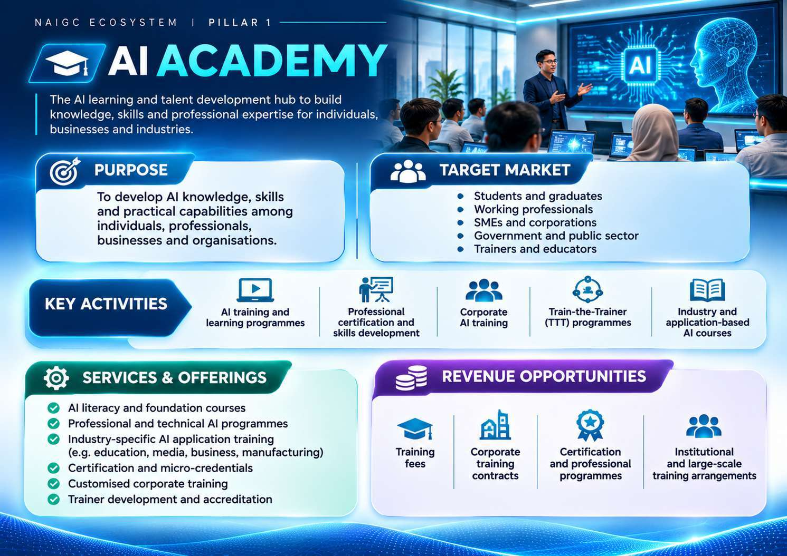

NAIGC
Malaysia AI Generation Centre
SYS//NODE.01 // ONLINE
←
HUB UTAMA
SYS//NODE.01 • STRATEGIC PILLAR 01
AI ACADEMY
The AI learning and talent development hub to build knowledge, skills and professional expertise for individuals, businesses and industries.
PURPOSE & OBJECTIVES
To develop AI knowledge, skills and practical capabilities among individuals, professionals, businesses and organisations across Malaysia.
TARGET MARKET
- Students and fresh graduates preparing for AI careers
- Working professionals seeking AI upskilling and reskilling
- SMEs and corporations adopting AI tools and workflows
- Government and public sector officers and leaders
- Trainers, educators and academic faculty members
KEY ACTIVITIES & OPERATIONS
AI Training & Learning
Comprehensive structured curriculum from foundations to advanced AI models and deployment.
Professional Certification
Accredited micro-credentials verifying competency in machine learning and generative AI.
Corporate Training Contracts
Custom enterprise workshops tailored to specific industry operational needs.
Train-the-Trainer (TTT)
Developing a certified nationwide cohort of qualified AI instructors and mentors.
Industry-Specific AI Courses
Applied training in education, media, fintech, manufacturing and healthcare.
SERVICES & OFFERINGS
- AI Literacy & Foundation Courses for Non-Technical Leaders
- Professional & Technical AI Engineering Bootcamps
- Industry-Specific AI Application Training (Media, Logistics, Retail)
- Accredited Micro-Credentials & Competency Assessments
- Customised Enterprise In-House AI Workshops
- Certified Trainer Development & Accreditation Framework
REVENUE & VALUE OPPORTUNITIES
Training & Course Fees
Corporate Training Contracts
Certification & Licensing
Institutional & Govt Grants
OFFICIAL NAIGC STRATEGIC ROADMAP • PILLAR 01
NATIONAL ARCHIVE • AUTHORISED DOCUMENT

SYS//CORE ONLINE • 8 ECOSYSTEM NODES OPERATIONAL • MALAYSIA AI GENERATION CENTRE